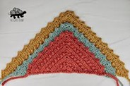

Home
Materials
Patterns
Home
Materials
Patterns

Bring a touch of handmade charm to your space with this six-day star blanket. Its unique star-shaped pattern and soft texture make it an eye-catching and functional addition to your home.

This Foggy Shores Pullover is super soft and has a beautiful, beachy blend of colors. It’s comfy, cozy, and perfect for throwing on whenever you want an easy, relaxed look. This sweater comes in sizes XS-5X

This handmade picot crochet bandana features delicate edging and a lightweight, comfortable fit. It’s a stylish accessory that adds a touch of texture and charm to any outfit.